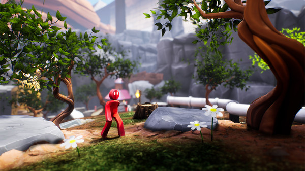

|  | SupraLand20$ Developer : Supra Games
|
||
about gameTry the demo! A mix between Portal, Zelda and Metroid. Explore, solve puzzles, beat up monsters, find secret upgrades and new abilities that help you reach new places. Playtime 12-25h. Supraland is a First-Person Metroidvania Puzzle game. The main sources of inspiration are Zelda, Metroid and Portal. Supraland assumes that you are intelligent and lets you play independently. The story is minimal, gives you an overarching goal to pursue, and then sets you free. Despite child friendly visuals, the game targets experienced players. Playtime: ~12-25h |
|||